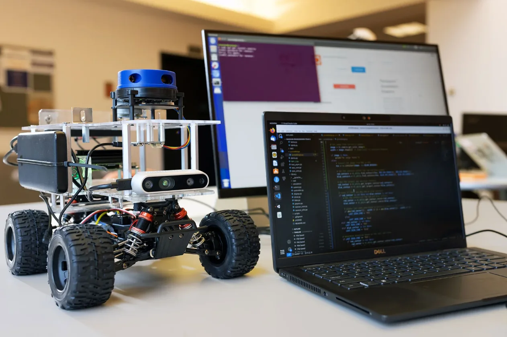

Robotics · Hardware build
Autonomous racecar for the MIT Beaver Works Grand Prix
I captained a team of five that assembled a scale-model car and programmed it in Python to drive itself through a 9-section obstacle course.

We placed first in the international division and third of 11 teams overall at the MIT Beaver Works Summer Institute's Grand Prix in August 2023, after a four-week course taught at Syracuse University.
The problem
The Autonomous RACECAR Grand Prix is the final of a robotics course from MIT's Beaver Works Summer Institute. Each team's car has to get through an obstacle course with nobody driving it, and the 2023 course had 9 sections.
I took the course through Orange Works, a four-week program at Syracuse University that taught the Beaver Works labs to local high school students. In early August we took our cars to MIT for the final. The field was 11 teams, including teams from Greece and Japan.
What I built
Each team assembled its own car on a commercial frame. The car carries a motor drive, a Jetson Nano computer, a color and depth camera and a LIDAR.
I captained our team of five and worked on the driving code with my teammates. The code is Python, written against the course library, which calls the team's update function about 60 times a second. Each call can read a 720-sample LIDAR scan, 640 by 480 color and depth images, and the IMU's acceleration and angular velocity.
Our code added the driving logic on top:
- LIDAR and IMU fusion for obstacle avoidance
- AR marker recognition with OpenCV, used for localization
- A PID control loop for driving
Results
Our team placed first in the international division, which had teams from Syracuse University, Japan and Greece, and third of the 11 teams in the full field. The car covered all 9 sections with zero collisions, and its response to obstacles was under 100 ms.
On August 10, 2023, Syracuse University published a story on the program that describes the cars and the trip to MIT. The photos here are from that story.
Limits and next steps
No code or run logs from our car are public, so I cannot show how the response time was measured. For scale, the course library's loop runs at about 60 frames per second, which makes 100 ms about six frames.
The hardware design and the sensor library came from MIT's course. Our own work was assembling the car and writing the driving logic on top, in four weeks.
Ask a question about this project
An AI assistant answers from this site's text. It can be wrong; this page is the source.